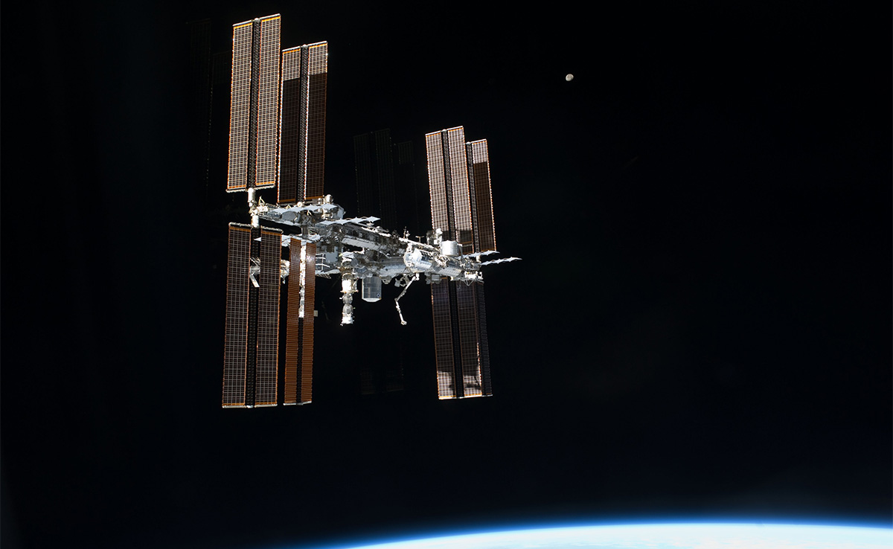

The Cold War between the United States and former Soviet Union gave birth to the space race and an unprecedented program of scientific exploration.
The Soviet Union was ahead of the United States in the race to space, with Yuri Gagarin, on April 12, 1961 single orbit around the Earth, although uneventful, as the cables joining his Vostok 1 spacecraft descent module and service module failed to separate properly, causing massive shaking as the spacecraft reentered Earth’s atmosphere. Gagarin ejected before landing, parachuting down safely near the Volga River.
Gagarin became an international celebrity, toured the world and was showered with honors by his country. But Gagarin’s triumph was a painful blow to the United States, which had scheduled its first space flight for May, 1961.
Project Mercury
Project Mercury, the first United States program to put humans in space, made 25 flights, six of which carried astronauts between 1961 and 1963. The objectives of the program were: to orbit a human spacecraft around Earth, to investigate a person’s ability to function in space, and to recover both the astronaut and spacecraft safely.
The Mercury astronauts were also referred to as the “Original Seven”. On April 9, 1959, NASA introduced its first class astronauts:
- Wally Schirra
- Deke Slayton
- John Glenn
- Scott Carpenter
- Alan Shepard
- Gus Grissom
- Gordon Cooper
Freedom 7 Mission
On May 5, 1961. Alan Sherpard became the first American in space on the Freedom 7 mission, powered by a Redstone rocket, a flight that lasted 15 minutes, 28 seconds. He later made it to the moon on Apollo 14.
Image credit: NASA
NASA research mathematician Katherine Johnson did the trajectory analysis for Alan Shepard’s mission. She worked at NASA from 1953 to 1986.
Image credit: NASA
Liftoff of astronaut Alan Shepard Jr.’s Freedom 7 mission, powered by a Redstone rocket, May 5, 1961. Shepard became the first American in space. He later made it to the Moon on Apollo 14.
The Gemini Program
The Gemini Program primarily tested equipment and mission procedures and trained astronauts and ground crews for future Apollo missions to the Moon. The program’s main goals were: to test an astronaut’s ability to fly long duration flights (14 days); to understand how a spacecraft could rendezvous and dock with another vehicle in Earth orbit; to perfect re-entry landing methods; and to further understand the effects of longer spaceflights on astronauts. NASA selected “Gemini” because the word is Latin for “twins”, and the Gemini was a capsule built for two.
The Apollo Program
On May 25, 1961, President John F. Kennedy challenged Americans to reach for the Moon, and exactly eight years, one month and 26 days after this challenge, Project Apollo landed the first humans on the lunar surface and returned them safely to Earth. The program has conducted scientific exploration of the Moon, and developed man’s capability to work in the lunar environment.
But all did not go flawlessly as the Apollo program was hit by tragedy as the first crew prepared to fly on January 27, 1967, fire swept through the Apollo 1 command module during a preflight test on the Cape Kennedy launch pad. Three astronauts, Gus Grissom, Ed White, and Roger Chaffee sadly lost their lives. NASA was not discouraged but moved forward to ensure the safety and success of future missions.
Apollo 11 was the spaceflight that first landed humans on the Moon. Commander Niel Armstrong and lunar module pilot Buzz Aldrin formed the American crew that landed the Apollo Lunar Module on July 20, 1969. Armstrong became the first person onto the lunar surface six hours and 39 minutes later on July 21; Aldrin joined him 19 minutes later. They spent about two and a quarter hours together outside the spacecraft, and collected 21.5 kg of lunar material to bring back to Earth.
Image credit: QUARTZ
A photo of Niel Armstrong on the Moon, during the Apollo 11 Moon mission
Apollo 11 was launched by a Saturn V rocket from Kennedy Space Center on Merritt Island, Florida, on July 16 and it was the fifth crewed mission of NASA’s Apollo program. After being sent to the Moon by the Saturn V’s third stage, the astronauts separated the spacecraft from it and traveled for three days until they entered lunar orbit. Armstrong and Aldrin then moved into Eagle and landed in the Sea of Tranquility on July 20. Fifty years ago, Apollo 7 transmitted the first live broadcast from a human United States spacecraft.
Walking in Space
NASA astronaut Ed White became the first American to walk in space on the Gemini IV mission on June 3, 1965.
Gemini X
The Gemini X spacecraft, launched July 18, 1966. Astronauts John Young and Mike Collins carried out a three – day mission to rendezvous and dock in space with an Agena spacecraft that had lifted off 101 minutes earlier.
Gemini III
Gemini III astronauts Gus Grissom and John Young, crewed the first human Gemini flight, March 23, 1965. This mission tested the new maneuverable spacecraft that let the astronauts control more of the flight.
The International Space Station
The International Space Station is a model for global cooperation and scientific advancements that is enabling growth of private industry in low-Earth orbit and development of new technologies to advance human space exploration. Built between 1998 and 2011, the space station has housed humans continuously since Nov. 2, 2000. Because molecules and cells behave differently in space, research in microgravity helps advance scientific knowledge. The space station is a U.S. National Laboratory, which the Center for the Advancement of Science in Space (CASIS) manages for research investigations that improve life on Earth. NASA has contracted with commercial companies SpaceX, Orbital ATK, and Sierra Nevada Corporation to deliver science investigations, cargo, and supplies to the crews living in space, and soon Boeing and SpaceX will transport astronauts to and from the station.

Image credit: NASA
A photo of the International Space Station
Image credit: space.com
A Space X rocket during launch
Space castastrophes
A total of 18 people have sadly lost their lives either while in space or in preparation for a space mission, in four separate incidents.
The two worst disasters both involved NASA’s space shuttle. On 28 January 1986 the Challenger space shuttle blew up 73 seconds after take-off, owing to a failure on a sealant ring that allowed hot gas from the boosters used to lift the craft in the first two minutes of flight to hit the huge main external tanks containing hydrogen-oxygen fuel. All seven crew members died, including Christa McAuliffe, a teacher from New Hampshire selected on a special NASA programme to bring civilians into space. The Challenger disaster remains perhaps the most notorious in the history of spaceflight, owing to the number of people, many of them schoolchildren, who saw it live on TV.
In 2003 a further seven astronauts died when the shuttle Columbia broke up on re-entry into Earth’s atmosphere. A piece of foam insulation had broken away during launch, damaging a wing and sealing the mission’s fate almost before it had started. A subsequent report sharply criticized NASA for allowing the incident to happen and failing to intervene during the mission.
The remaining four fatalities during spaceflight were all cosmonauts from the Soviet Union. The first was Vladimir Komarov on 24 April 1967, when the parachute on the landing capsule of his Soyuz 1 mission failed to open. This was the first crewed flight of the Soyuz spacecraft that is still used to send people to the International Space Station. In 1971 all three of the Soyuz 11 mission crew died when their capsule depressurized before re-entry on their way back from humanity’s first ever stay on a space station, Salyut 1.
A further 13 astronauts and cosmonauts have died during training and testing for spaceflight. Perhaps the most notorious incident was a fire on the launch pad of the Apollo 1 mission in January 1967. The three victims were Roger Chaffee, Gus Grissom, who had been the second American ever in space, and Ed White, who in 1965 had become the first American to walk in space. The Apollo programme to reach the moon was almost cancelled in the wake of the disaster. As it was, crewed flights were suspended for 20 months.